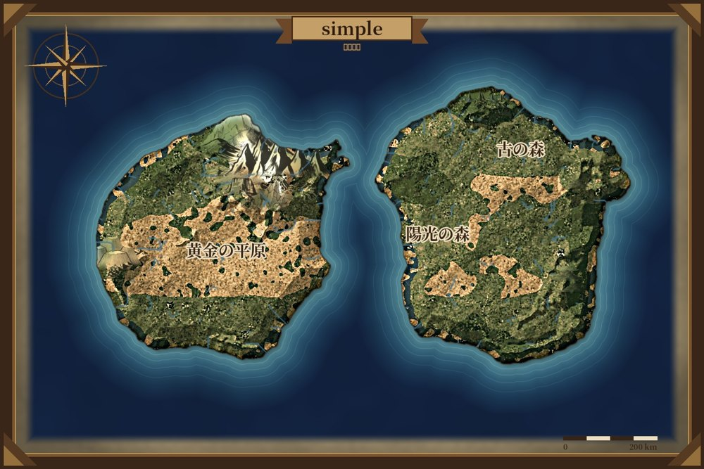

概要(修正版): ユーザー案の5工程のうち、①部品②地形の点数との近さで選ぶ③地形から色を決める、④足もとをなじませる、までを実際の地図3枚に当てました(手調整なし)。部品の絵は点数表のとおり、場所の地形の点数(高さ・険しさ・寒さ・乾燥・湿潤・火山性・浸食台地・なだらか)と向きが近いものが選ばれて置かれます。



| 全体の秒 | 最大メモリ | 置いた部品数 | |
|---|---|---|---|
| Azgaar | 約10〜13 | 約600MB | 174 |
| PWG | 約9〜12 | 約600MB | 54 |
| 簡易生成 | 約8〜9 | 約600MB | 39 |
指示: 「全ての山や稜線はこの絵で作る。色は元の地図による。絵は大きさを変えて全体をうまい絵に見せる」。変更: ①線だけの稜線(前の段階の稜線の線)はやめ、山も稜線も部品の絵で描く。②部品の線と明暗だけを使い、色は下の地図の地面の色から作る(雪も地図の寒い所の色)。③大きさは高さに応じて約34〜180画素幅と大きく変え、高い所は大きく、すそ野は小さな丘にする。④岩のごろごろ・台地・砂丘・火山は、その場所の点数が高い時だけ選ばれやすいようにした。
「ちゃんと絵を置いてない」「変な家がある」。原因: ①最初の版は部品の絵を灰色の明暗に変えて色を塗り直したため、元の線と色が潰れて絵として置けていなかった。②家の記号は、山とは別に前の段階から入っていた都市の仮の印(川の近くに5個、四角に赤い屋根の簡単な絵)で、位置も意味も無いまま置かれていた。修正: 部品の絵(線・色)をそのまま貼り、地面の色味を弱く掛けるだけにした。家の記号はこの試作では外した。
やったこと: ①明るさを上げ、墨の黒を弱めた。②不自然に目立った部品(遺跡風の塔・樽や切り株のような台地・積み重なった崖・丸い岩のごろごろ・細い尖塔など、私の目視で約35個)は選ばない対象にした。③すそ野の足もとのぼかしを広げ(部品の高さの約3割)、地面への移りをなだらかにした。置いた部品数は第3版と同じ(Azgaar174・PWG54・簡易生成39)。
次: 色の寒さの効きを弱めて地面の色に寄せる、山の連なりの置き方を直す。